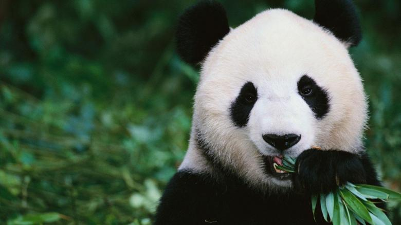

Panda
The giant panda is listed as endangered in the World Conservation Union's (IUCN's) Red List of Threatened Species. There are about 1,600 left in the wild. More than 300 pandas live in zoos and breeding centers around the world, mostly in China.
- Scientific Name: Ailuropoda melanoleuca
- Average Weight:70-120kg
- Average lifespan: 20 years
- Habitat : Regions of central China
The giant panda (Ailuropoda melanoleuca, literally "black and white cat-foot"; Chinese: 大熊猫; pinyin: dà xióng māo, literally "big bear cat"), also known as panda bear or simply panda, is a bear native to south central China. It is easily recognized by the large, distinctive black patches around its eyes, over the ears, and across its round body. The name "giant panda" is sometimes used to distinguish it from the unrelated red panda.